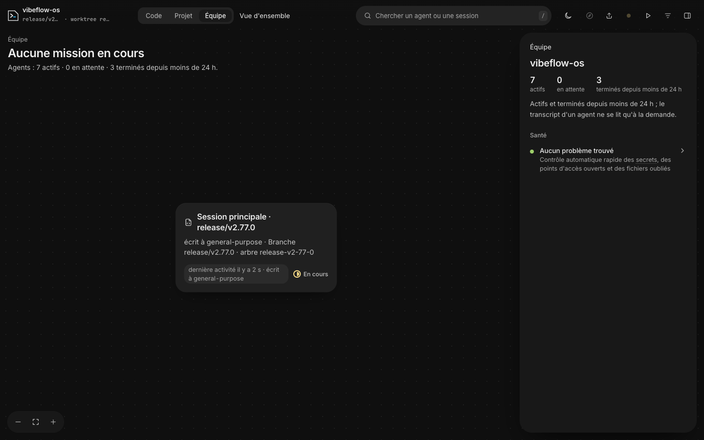
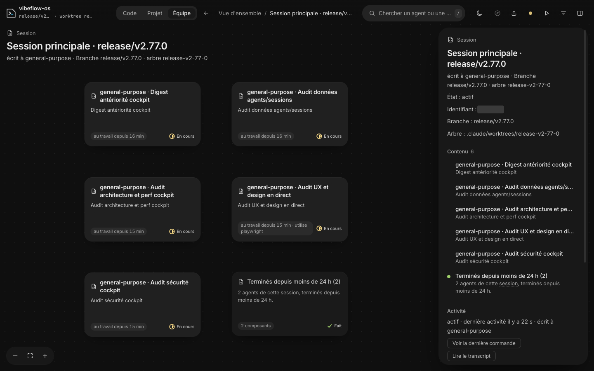
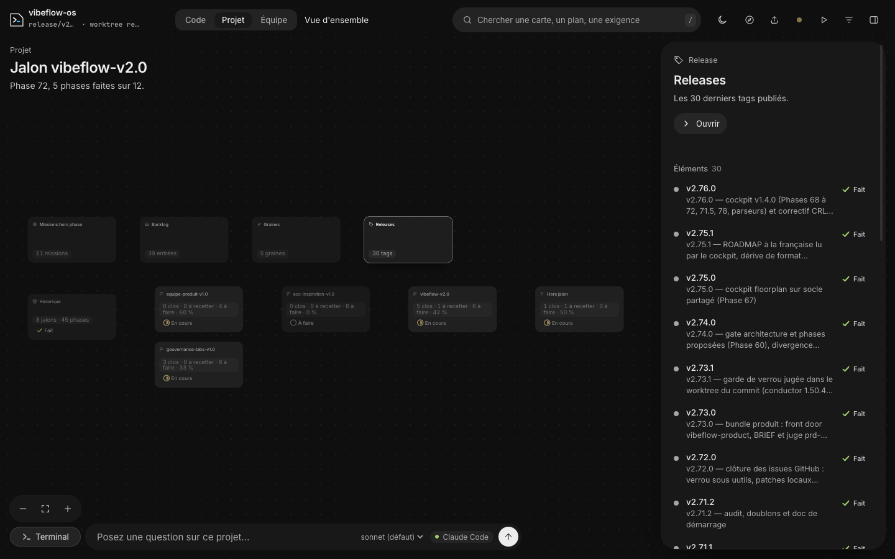
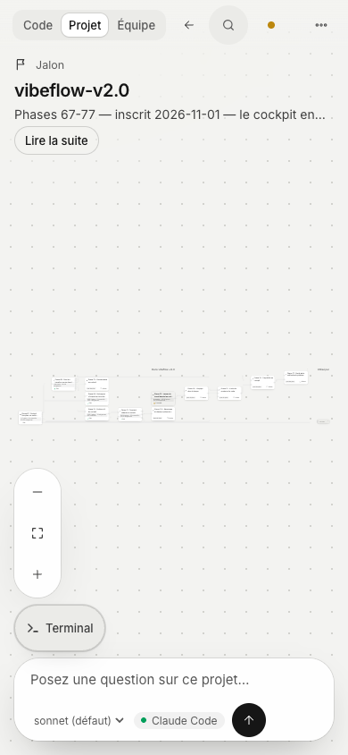
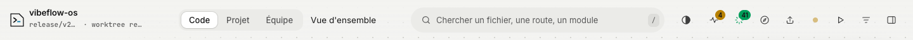
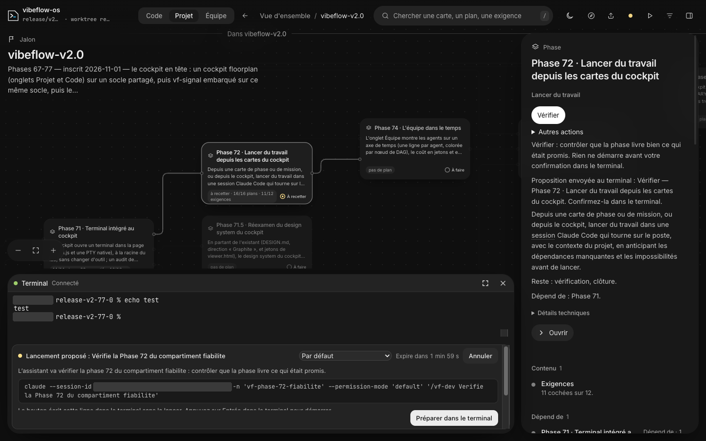

Le cockpit est solide là où il a été construit avec soin : le périmètre de sécurité, le tiroir Git, le terminal, le lancement en deux temps, la direction Graphite. Il est faible à l'endroit exact que vous pointez. L'onglet Équipe ne sait dire ni qui travaille, ni qui vous attend, ni ce qui s'est passé.
Sept audits ont tourné en parallèle, puis ont été recoupés : l'antériorité (le panel de juges, vos arbitrages, les Phases 73 à 77), la chaîne de données des agents, l'architecture, la sécurité, un parcours complet dans le navigateur, une veille de quinze outils, et la surface officielle de Claude Code. Ils ramènent presque tout à quatre causes.
Le cockpit déduit l'activité de la date de modification des transcripts, avec un seuil de 180 secondes. Un agent qui lance des tests pendant dix minutes disparaît. Une session au repos n'existe plus après trois minutes. Claude Code publie pourtant l'état de chaque session, et répond en 0,14 s sur ce poste.
Rien n'est conservé d'une minute à l'autre : ni durée fiable, ni frise, ni coût. Tout est déjà écrit dans les transcripts (l'heure de chaque ligne, la durée de chaque outil, les jetons, les compactions). Il manque un index.
Le serveur collecte en bloquant toutes les cinq secondes et reste sourd 9 % du temps. La page sert de base de données. Trois onglets ouverts épuisent les connexions du navigateur et figent le cockpit sans un message.
Le canevas à cartes sert bien la carte du code. Appliqué à la feuille de route et à l'équipe, il échoue : des titres de 7 px à l'ouverture de Projet, une carte seule sur un canevas vide dans Équipe, et aucune carte atteignable au clavier.
Dix constats, tous domaines confondus, dans l'ordre où je les traiterais. La plupart tiennent dans un commit.
| Id | Constat | Domaine | Effort |
|---|---|---|---|
| D1 | Un agent qui travaille disparaît de l'écran après 180 secondes de silence. Un test long suffit. | Données | S |
| H1 | Trois onglets ouverts figent le cockpit, sans un message. | Architecture | S |
| D2 · M3 | Une session au repos disparaît, et l'onglet titre « Aucune mission en cours » avec sept agents actifs. | Données, interface | S |
| D4 | Les workers orphelins sont rangés dans « Terminés ». | Données | S |
| BL1 | Projet est illisible à l'ouverture : titres de carte à 7 px. | Interface | M |
| BL2 | Aucune carte n'est atteignable au clavier. | Interface | M |
| H2 | Le serveur est sourd 9 % du temps, bloqué par sa propre collecte. | Architecture | S puis M |
| H4 | La traduction réécrit des noms de fichiers : tokens.ts s'affiche « Jetons ». | Architecture | S |
| A-01 | « Demander » peut reprendre n'importe quelle session du lab. | Sécurité | S |
| M9 · M10 | Des états muets : une coupure du serveur invisible cinq minutes, un terminal absent sans explication. | Interface | S |
C'est le point que vous jugez le plus améliorable, et l'audit vous donne raison. La capture de gauche a été prise pendant cet audit : sept agents travaillaient, trois avaient fini, et l'écran montrait une carte sur un canevas vide, sous le titre « Aucune mission en cours ».


claude agents --json). Mesuré sur ce poste : 0,14 s, cinq sessions, états « occupée », « au repos », « bloquée ».plan-73exec-lot-a · arbre phase-73-aexec-lot-b · arbre phase-73-brevue-73 · rapport rendu il y a 3 minCe que la régie corrige. Le worker qui lance des tests depuis sept minutes reste à l'écran avec sa commande en cours ; aujourd'hui il disparaît après 180 secondes de silence. La session au repos reste listée. Le manager porte son nœud de plan, et l'attente est un état à part entière, alors que le cockpit n'en connaît aucun.
Les états, dérivés de preuves. « Au travail », « commande longue », « silencieux » puis « suspect » quand aucun signe de vie n'arrive, « vous attend », « attend ses agents », « au repos », « terminé, à relire », « orphelin » quand le parent a fini et que l'enfant tourne encore. Chaque état garde son glyphe et son mot, sans fond teinté, comme le veut Graphite.
Ce que la frise répond. Qui a tourné en parallèle, qui a attendu quoi, combien de temps d'agent a été perdu à vous attendre (ici 20 minutes cumulées), quand les commits sont tombés. Un clic sur une voie ouvre la fiche ; un clic sur un commit ouvre le tiroir Git.
Deux lectures du même axe. En mode Horloge les durées sont vraies. En mode Événements les silences sont compressés, sinon une minute dense devient un trait et une nuit creuse un désert. Les outils qui s'en sortent proposent les deux.
La Phase 74 la prévoit déjà, sans cadrage. Trois précisions pour ce cadrage. La note de la phase donne meta.json comme source des horodatages ; il n'en porte aucun, ils sont dans les transcripts. « Colorée par nœud de plan » contredit Graphite : le nœud s'écrit sur la voie, la couleur reste aux états. Et une frise au-delà de 24 heures demande de conserver un index sur disque, ce qui rouvre la fenêtre de 24 heures décidée en Phase 69.
exec-lot-a · arbre phase-73-a · fable 5.2Chaque action prépare une commande dans le terminal. Rien ne part sans votre touche Entrée, comme pour « Lancer ».
vf-cockpit-equipe.mjsa1b2c3de4f5a6bAujourd'hui, la fiche d'une session tient en quatre lignes (état, identifiant, branche, arbre). Le transcript réduit affiche un intertitre « Mandat » toujours vide pour une session, puis les messages et les outils dans deux listes séparées, sans heure. L'heure est pourtant présente sur chaque ligne du transcript.
| Besoin | Aujourd'hui | Source proposée | Stabilité |
|---|---|---|---|
| Qui est vivant, occupé, au repos | date de modification du transcript, seuil de 180 s | claude agents --jsonvérifié sur ce poste : Claude Code 2.1.322, 0,14 s par appel | documentée, en aperçu de recherche |
| Qui attend une permission ou une réponse | rien | hooks PermissionRequest et Notification ; en repli, un AskUserQuestion sans résultat dans le transcript | documentée ; le repli est une déduction |
| Début et fin des sous-agents | balayage de 1 587 fichiers meta.json à chaque tour | hooks SubagentStart et SubagentStop, qui donnent le chemin du transcript | documentée |
| Durées, outils, erreurs, compactions, fichiers | non lus | transcripts, par un index incrémental (décalage d'octets par fichier)prototype mesuré : 147 Ko d'index pour 1 068 transcripts | format interne : à garder derrière le contrat de forme existant |
| Contexte, coût, limites de 5 h et de 7 jours | vf-signal seulement, pour la session courante | le JSON que Claude Code passe au script de ligne d'état, relayé par ce script ; en repli, le champ usage des transcripts | documentée ; repli interne |
| Agir sur une session | rien | claude attach, claude --resume <id> "message", claude stop, --fork-session | documentée |
~/.claude/sessions), mais leur format n'est pas garanti et la documentation déconseille de lire le registre du démon. La commande est la voie stable.Le parcours a été fait dans le navigateur, à 1440, 1024 et 390 pixels de large, en clair et en sombre, au clavier seul, avec le terminal et le lancement ouverts en direct. 85 captures. Aucune session n'a été lancée.
Graphite est tenu, surtout en sombre. Le couple glyphe et mot pour les états est la signature la plus solide de l'interface. Les meilleures surfaces sont les moins « graphe » : le tiroir Git, le terminal, le bandeau de lancement, la recherche. Le défaut de fond est ailleurs : le canevas à cartes est appliqué à tout, y compris là où il échoue.
Barème : 90, livrable tel quel ; 70, utilisable avec des frictions ; 50, la tâche principale est gênée ; 30, elle échoue. Ce sont les notes de ce parcours. Le panel du 6 novembre donnait 53 de moyenne, la recette du 8 novembre entre 64 et 84.


C'est la décision de design que je recommande. Chaque onglet répond à une question différente et mérite la forme qui y répond. Le graphe reste là où il est vrai.
| Id | Gravité | Constat, observé et mesuré | Correction | Antériorité |
|---|---|---|---|---|
| BL1 | Bloquant | Projet est illisible à l'ouverture. Titres de carte à 7,1 px à 1440, 5,4 px dans le jalon v2.0, 1,9 px au téléphone. Les cartes occupent 12 % puis 4 % de la zone libre. Zoomé à taille lisible, on ne voit plus que trois phases. | Les couloirs ci-dessus ; à défaut un plancher de lisibilité et une mise en page compacte. | rouvre le plancher de zoom réservé à Code |
| BL2 | Bloquant | Le canevas est hors du clavier. Aucune carte parmi les 54, 22 et 17 arrêts de tabulation des trois onglets. Les cartes n'ont ni rôle ni nom ; les flèches et Entrée sont sans effet. | Un rôle de bouton, un nom, une tabulation itinérante, les flèches entre voisins, Entrée pour plonger. | connu du panel, non livré |
| M1 | Majeur | « Ajuster à l'écran » ne montre pas l'ensemble. Sur Code, 6 cartes sur 26 sont entièrement visibles, 16 sont hors écran, 2 sous le panneau. Six crans de molette et le canevas est vide, sans repère. | Ajuster sur la zone libre, une minicarte, un compteur de cartes hors champ. | nouveau |
| M2 | Majeur | Le titre de la vue flotte sur les cartes. Sans fond, il se superpose à elles dès qu'on se déplace. | Une zone réservée, ou le titre dans l'en-tête. | rouvre « flou sans fond » |
| M3 | Majeur | Équipe dit l'inverse de ce qu'elle montre. « Aucune mission en cours » avec sept agents, un canevas vide à 93 %, et « Santé : aucun problème » quand Code en affiche quatre. | La régie. | nouveau |
| M4 | Majeur | Fiche de session et transcript pauvres. La branche est écrite trois fois. Le transcript tient dans une boîte de 308 px à défilement imbriqué, en markdown brut. | Un lecteur large, un fil unique. | markdown connu du panel |
| M5 | Majeur | L'en-tête se décode mal. Neuf icônes sans libellé sur Code. Le triangle ouvre « Parcours », la roue veut dire « récent », un point beige vaut « N au travail ». « Vue d'ensemble » se lit comme un quatrième onglet. La branche est tronquée malgré la place. | Trois groupes libellés au-delà de 1 280 px ; un fil d'Ariane avec chevron. | troncature connue du panel |
| M6 | Majeur | Les surcouches ne retiennent pas le focus. Tab sort de la recherche restée ouverte, puis Échap ne la ferme plus. Même sortie pour l'export. Panneau fermé : 43 arrêts invisibles. | Rendre inerte ce qui est masqué ou derrière ; Échap au niveau du document. | nouveau |
| M7 | Majeur | Un gel de 2,3 s. Ouvrir un résultat de recherche dans un niveau de 70 cartes bloque l'onglet, canevas blanc. « Mise en page… » ne s'affiche jamais. | La mise en page dans un worker ; l'indicateur avant le calcul. | nouveau |
| M8 | Majeur | La santé parle anglais. Les constats sortent en anglais dans une interface française, et l'introduction cite des services que le dépôt n'utilise probablement pas. | Traduire les gabarits ; fonder la détection sur les dépendances. | rouvre « constats laissés en anglais » |
| M9 | Majeur | Une coupure du serveur reste muette cinq minutes. La pastille ne change pas. La bannière arrive à 300 s et reste après le retour, jusqu'à un clic. | « Direct coupé » à 5 s, bannière à 15 s, qui se retire seule. | nouveau |
| M10 | Majeur | Terminal : absence muette, puis message trompeur. Sans l'option, ni pastille ni « Lancer », sans explication. Avec l'option, un onglet ouvert à la main lit « non disponible » alors que le serveur l'a. Fermer le tiroir ne termine pas le shell, et rien ne permet de le terminer. | Dire la vraie cause ; une pastille expliquée ; une action « Terminer la session ». | nouveau |
| M11 | Majeur | Bandeau de lancement rogné, état périmé. La phrase « écrit cette ligne sans la lancer » est coupée, les modes sont sous le pli. Après « Annuler », le panneau dit toujours « Confirmez-la ». | Un tiroir qui s'ajuste au bandeau ; un statut remis à zéro. | connu du panel, partiel |
| M12 | Majeur | Tiroir Git étroit. À 1024 px, un seul commit est visible. Les sujets sont coupés vers 22 caractères. Les 653 rangées sont rendues d'un coup. | Worktrees repliés, détail dans le panneau, liste virtualisée, largeur réglable. | nouveau |


Du caractère : le graphite sombre ; les glyphes d'état ; le tiroir Git en lecture seule, où chaque action est une commande à copier ; le lancement en deux temps. Générique : la grille de cartes sur fond pointé, pour tout.
Le vocabulaire du Code appliqué au planning (« Élément », « module », « Utilisé par ») ; Backlog et Releases en vignettes à 8 px qui doublent la liste du panneau ; deux anneaux de focus différents ; trois formats de titre d'onglet ; le tiroir Git qui se ferme à chaque changement d'onglet, parce que la page se recharge en entier ; « Verifie » sans accent dans la commande de lancement ; l'historique du terminal perdu au changement d'onglet.
Chaque ligne donne la preuve et la façon dont elle a été obtenue : mesuré ou sondé (exécuté pendant l'audit), lu (dans le code), déduit. L'effort est une taille : S pour un commit, M pour un lot, L pour une phase.
Matière mesurée : 63 sessions (193 Mo) et 1 005 transcripts de sous-agents (2,42 Go) de ce dépôt. Le collecteur réel a été rejoué sur un dossier personnel factice, avec un témoin positif.
| Id | Gravité | Constat et preuve | Correction | Effort |
|---|---|---|---|---|
| D1 | Critique | Un agent qui travaille disparaît de l'écran. Un sous-agent non fini, muet depuis 180 s, est exclu, et sa session avec lui si rien d'autre n'y est affiché. Sondé : un worker dans une commande depuis 10 min donne « Personne au travail ». 35 % des sous-agents du dépôt ont connu un tel silence, 133 de plus de 10 min. vf-signal hérite du trou.vf-cockpit-equipe.mjs:72-76 · sondé | Un agent non fini reste affiché tant que sa session vit, avec « outil en cours depuis N » tiré de l'appel sans résultat. | S |
| D2 | Haute | Une session au repos n'existe plus après trois minutes. La fenêtre de 24 h ne vaut que pour les sous-agents. Quatre sessions du dépôt écrites dans les 24 h étaient absentes, dont une vivante. Aucun état « vous attend ». C'est la vraie cause des sessions « manquantes » des autres worktrees.vf-cockpit-equipe.mjs:76,83,86 · mesuré | Lire l'état officiel des sessions : occupée, au repos, vous attend, close. | S |
| D3 | Haute | L'alerte « à surveiller » ne peut pas se déclencher. Elle exige un agent actif depuis 120 s ou plus (900 s pour « commande en cours depuis 15 min »), alors que l'état actif est borné à 180 s. Les tests passent sur des données écrites à la main. L'âge affiché reste figé entre deux mises à jour.71-vf-equipe-rendu.js:55-61,109-113 · test-cockpit-equipe.sh:1146 · lu | Âge recalculé dans la page, et un test qui traverse le collecteur. | S |
| D4 | Haute | Les workers orphelins sont invisibles. Un worker encore actif sous un manager terminé est rangé dans « Terminés ». Le contrôle « orphelin ? » ne regarde qu'un parent de type session. C'est le cas de l'issue #223.vf-cockpit-equipe-carte.mjs:47-49 · vf-cockpit-who.mjs:118 · sondé | Orphelin = parent terminé et enfant vivant, affiché dans la régie avec « Demander l'arrêt ». | S |
| D5 | Haute | Le lien entre un agent et sa mission tient à un fil. 14 % des mandats citent leur nœud (143 sur 1 005). Le registre du verrou n'est lu que pour ses entrées en cours, puis supprimé. 20 plans de mission sur 55 s'appellent dag-*.json ; seuls les *.dag.json sont lus. D'où « Aucune mission en cours » avec sept agents actifs.vf-cockpit-planning.mjs:98 · vf-cockpit-who.mjs:113-132 · mesuré | Lire les deux nommages, conserver le registre après relâchement, faire écrire le nœud dans le mandat par le team-kernel. | M |
| D6 | Moyenne | « New session » est pris pour un nom choisi. C'est le titre par défaut d'un client de Claude, lu comme un renommage.vf-cockpit-lecture.mjs:96 · mesuré | Lire le nom officiel et sa provenance ; ignorer les valeurs par défaut. | S |
| D7 | Moyenne | « Mandat » est vide par construction. Le mandat est la première ligne du transcript si elle vient de l'utilisateur ; aucune des 63 sessions ne commence ainsi. L'intertitre s'affiche quand même.vf-cockpit-transcript.mjs:95 · mesuré | Pas de mandat pour une session ; pour un agent, le lire dans son dispatch. | S |
| D8 | Moyenne | Le transcript perd l'ordre et l'heure. Messages et outils partent dans deux listes ; l'horodatage, présent sur toutes les lignes, est jeté. Le graphe Équipe n'a aucun lien : la hiérarchie n'est qu'un emboîtement.vf-cockpit-transcript.mjs:99-114 · lu | Un seul fil daté, comme dans la maquette 3. | S |
| D9 | Basse | États et durées approximatifs. La durée inclut les veilles d'un agent réveillé (jusqu'à 101 h). L'état « bloqué » n'est jamais produit. Le champ de fin manque pour 38 agents sur 888 depuis Claude Code 2.1.308.mesuré, en partie déduit | Durées par segments d'activité, tirées de l'index. | M |
Ce qui tient : le moteur vendorisé se reconstruit à l'identique et la CI le rejoue, les routes Git sont asynchrones, le terminal est isolé dans son processus, les schémas sont versionnés, et aucune fuite n'apparaît après 120 rendus.
| Id | Gravité | Constat et preuve | Correction | Effort |
|---|---|---|---|---|
| H1 | Haute | Trois onglets ouverts figent le cockpit. Chaque page tient deux flux d'événements, et Chrome plafonne à six connexions par origine. Avec Code, Projet et Équipe ouverts, une requête d'état reste sans réponse et une quatrième page ne charge jamais. Un onglet fermé : 2 ms. Rien ne le dit à l'écran.viewer.html:1958 · 70-vf-live.js:257 · mesuré | Un seul flux par page, puis un flux partagé entre les onglets. | S |
| H2 | Haute | Le serveur est sourd 9 % du temps. Toutes les 5 s, la collecte bloque la boucle pendant 318 ms (1 959 lectures d'état de fichier, 9,8 Mio de fins de transcripts, des sous-processus git et verrou), même sans aucun onglet. Un changement de planning ajoute 901 ms : le planning est lu deux fois et le verrou interrogé quatre fois.vf-cockpit-live.mjs:142-153 · vf-cockpit-project.mjs:64-66 · mesuré | Lectures asynchrones, un seul appel au verrou par cycle, cache par date de modification, aucune collecte sans client. | S puis M |
| H3 | Haute | Le serveur s'arrête et se remplace sans laisser de trace. Une relance avec une option différente l'arrête et le remplace, jeton neuf compris. L'arrêt sur inactivité (60 min) ne compte que les flux de page. Le journal ne porte ni date ni motif, et rien n'empêche deux lanceurs de se croiser. Observé : le serveur de recette s'est arrêté au début de l'audit sans que le journal dise pourquoi.vf-cockpit.mjs:176,239-250 · serve.mjs:88,220 · lu et observé | Journal daté avec motif d'arrêt, verrou de lanceur, relance seulement si le code a changé. | S |
| H4 | Haute | La traduction réécrit vos données. Le dictionnaire s'applique à tout texte après le rendu, avec 99 clés d'un seul mot. Dans la page servie, le fichier tokens.ts s'affiche « Jetons », open.mjs « Ouvrir », health.mjs « Santé ». À l'inverse, une chaîne nouvelle du moteur reste en anglais sans alerte.80-vf-fr.js:142-146 · mesuré : 11 libellés de données sur 1 547 | Exclure les titres et les descriptions de cartes, puis traduire au point d'émission. | S puis M |
| H5 | Haute | Le couplage au moteur vendorisé coûtera cher à la première montée de version. 83 modifications sur l'amont, dont 63 dans le seul viewer.html ; dix lignes portent un marqueur maison. La base n'a jamais bougé depuis la v0.6.0.amont/patches · lu ; coût en jours déduit | Sortir le CSS dans une extension, proposer à l'amont les patchs génériques, ou assumer le fork et retirer l'appareil de patchs. | M à L |
| M1 | Moyenne | La page sert de base de données. Le graphe Projet ne vit que dans project.html : chaque mise à jour relit puis réécrit 3,66 Mo. Aucune route JSON n'expose les schémas pourtant décrits ; vf-signal refait donc toute la collecte dans un processus neuf toutes les 10 s.vf-cockpit-live.mjs:78-85 · vf-cockpit-query.mjs:19 · lu | Une coquille statique et des données en JSON. | M |
| M2 | Moyenne | 3,4 Mo par page. La bibliothèque de mise en page pèse 47,7 %, les données 26,6 %. 2,47 Mo sont identiques dans les trois pages et renvoyés à chaque navigation.mesuré | La même coquille, mise en cache une fois. | M |
| M3 | Moyenne | La mise en page gèle l'onglet. Elle tourne sur le fil principal : 1,2 s de gel pour 100 cartes et 216 liens.viewer.html:678 · mesuré | La déplacer dans un worker. | M |
| M4 | Moyenne | Le code exécuté n'est pas celui du dépôt. 52 modules sont copiés dans chaque lab puis renommés par expression régulière. Un serveur vivant garde l'ancien code après une mise à jour du plugin.vf-cockpit-build.mjs:111-117 · lu | Lancer le serveur depuis le module. Corrige aussi A-03. | M |
| M5 | Moyenne | Le plafond de lignes est tenu par des lignes longues. 13 % des lignes dépassent 160 caractères, jusqu'à 761. À 100 colonnes, les 6 831 lignes en feraient 9 667. Environ 1 100 lignes de code de navigateur vivent côté serveur et partent sérialisées.mesuré | Plafonner aussi en colonnes ; ranger ce code avec l'interface. | M |
| M6 | Moyenne | Pas d'état côté page. 21 observateurs maison réparent le focus, le défilement et les replis après chaque redessin. Chaque nouvelle vue recode sa propre réparation.70-vf-live.js:115-161 · lu | Un magasin d'état alimenté par le flux, des panneaux abonnés. | M |
| M7 | Moyenne | Des tests solides, mais chers et parfois muets. 68 suites, 4 130 assertions, des mutants dans 52 suites. En face : 77 % du temps de CI, 400 pauses fixes, et sans Chrome 28 suites sautent leur moitié navigateur en sortant 0. Trois onglets, deux lanceurs et la collision de port ne sont pas couverts.ci.yml:402-446 · compté, non rejoué | Exiger Chrome en CI ; deux scénarios de plus. | S |
| B1 | Basse | Assemblage complet à chaque ouverture. Le scan n'a pas de cache (4,7 s ici), et le serveur lance claude --version en synchrone avant d'écouter.serve.mjs:168 · lu | Cache de scan par date de modification. | S |
Le périmètre réseau tient. Le serveur n'écoute que sur 127.0.0.1, contrôle l'hôte exact, exige l'origine et un jeton de 128 bits sur ses routes, n'émet aucun en-tête de partage inter-origine, et sert une politique de contenu fermée avec des scripts autorisés par empreinte. Le terminal demande un secret de 256 bits à usage unique. Les seize sondes hostiles ont toutes été refusées.
| Id | Gravité | Constat et preuve | Correction | Effort |
|---|---|---|---|---|
| A-01 | Moyenne | « Demander » peut reprendre n'importe quelle session du lab. Le serveur ne contrôle que le format de l'identifiant qu'on lui passe. Qui tient le jeton d'une page peut faire répondre le modèle avec tout le contexte d'une session de travail, sorties d'outils comprises, et son tour s'ajoute à cette session.serve.mjs:280 · lu, non sondé | N'accepter que les identifiants que ce serveur a lui-même rendus. | S |
| A-02 | Moyenne | Les liens symboliques du lab sont suivis à l'assemblage. Un dépôt qui porte un lien vers un fichier extérieur voit le début de ce fichier copié dans la page, servie sans jeton, puis dans l'export partagé.vf-cockpit-build.mjs:87-94 · scan.mjs:69-75 · sondé avec un faux fichier marqué | Confiner à la racine réelle du lab, ne pas suivre les liens dans le scan, masquer les descriptions. | M |
| A-03 | Moyenne | Le dossier de sortie du lab est exécuté comme du code. Un agent qui n'a que le droit d'écrire dans le projet peut y réécrire un module que le serveur évalue ensuite, hors de tout contrôle de permission. Le README affirme l'inverse.serve.mjs:183-184,214-219 · lu, non sondé | Charger ce code depuis le module du plugin ; la sortie ne porte plus que des données. | M |
| B-01 | Basse | Un worktree forgé élargit « qui est au travail ». Une archive de lab peut déclarer un worktree qui pointe vers un autre projet ; ses sessions et leur transcript réduit apparaissent alors.vf-cockpit-arbres.mjs:25-33 · sondé | Appliquer aux arbres le contrôle déjà fait pour le tiroir Git. | S |
| B-02 | Basse | « Demander » n'a ni plafond ni délai. Chaque requête lance un processus Claude, sans limite de nombre ni de durée.serve.mjs:323-363 · lu | Deux exécutions au plus, un délai global. | S |
| B-03 | Basse | Les pages sans jeton sont joignables depuis un site tiers. La page Équipe (2,5 Mo) est reconstruite à chaque requête.vf-cockpit-server.mjs:136-143 · mesuré, rafale non jouée | Refuser les requêtes inter-sites hors des routes d'API ; mémoriser la page. | S |
| B-04 | Basse | L'export emporte les métadonnées VibeFlow. Titres et chemins de plans (532 entrées), dépôt, worktree et branche partent quel que soit le choix d'export.serve.mjs:51-60 · vérifié sur l'instance | Retirer ces clés par défaut. | S |
| B-05 | Basse | Le mode de lancement mémorisé peut être pré-planté. Le fichier n'est pas purgé au démarrage : une archive peut présélectionner un mode. Le clic et la touche Entrée restent requis.vf-cockpit-lancer-mode.mjs:24-27 · lu | Purger à l'assemblage, ou ranger ce fichier hors du lab. | S |
| B-06 | Basse | Durcissements. Le jeton du serveur n'est pas comparé en temps constant ; deux variables d'environnement de Claude passent au terminal ; une injection de version n'échappe pas un caractère.serve.mjs:174,514 · vf-cockpit-terminal-env.mjs:18 · lu | Trois retouches. | S |
Seize idées sont déjà inscrites au jalon (Phases 73 à 77), sans cadrage. Je ne les redécouvre pas : chaque ligne ci-dessous dit si elle est nouvelle, si elle précise une phase inscrite, ou si elle rouvre une de vos décisions.
La veille a couvert quinze outils (la vue d'agents de Claude Code, Conductor, Cursor 3, Codex, GitHub Agent HQ, Warp, Factory, Devin, Amp, Langfuse, Braintrust…). Tous convergent vers une liste d'agents par état. Aucun ne fait ce qui suit, et le cockpit a déjà la matière pour chacun.
| Idée | Ce qu'elle apporte | Statut | Effort |
|---|---|---|---|
| Régie : liste par état, « À vous » en tête | Répond d'abord à « qui a besoin de moi ». Remplace le canevas de l'onglet Équipe. | nouveau | M |
| États officiels et vivacité | Fin des agents qui disparaissent et des sessions fantômes. Corrige D1, D2, D4. | nouveau | S |
| Fiche d'agent avec fil daté | Durée, contexte, outils, erreurs, fichiers, dans l'ordre et à l'heure. | nouveau | S puis M |
| Frise des sessions | La journée d'un coup d'œil, les attentes hachurées, les commits posés dessus. | précise la Phase 74 | M |
| Relecture d'une mission au curseur | Le curseur de la frise allume en même temps les fichiers touchés sur la carte Code et le nœud du plan. | Phase 74, lien nouveau | L |
| Coût, contexte, limites | Par agent, par étage, par phase. Une jauge des limites de 5 h et de 7 jours, et le temps d'agent perdu à vous attendre. | étend la Phase 74 | M |
| Notifications | Le titre de l'onglet devient « (2) vous attendent », l'icône porte une pastille, une notification du système en option. Trois motifs seulement : besoin d'une réponse, fin, échec. | nouveau | S |
| Ailleurs sur ce poste | Une ligne qui dit qu'une session d'un autre lab vous attend. Pendant l'audit, c'était le cas, et rien ne le signalait. | nouveau | S |
| Agir sur une session : ouvrir, écrire, arrêter, bifurquer | Chaque action prépare une commande dans le terminal ; votre touche Entrée l'exécute. | rouvre « pas de terminal sur Équipe » | M |
| Radar de collisions | Deux agents sur le même fichier, signalés avant la fusion. | nouveau, prolonge la Phase 75 | M |
| Empreinte en direct sur la carte Code | Les fichiers en cours d'écriture s'allument, avec le nom de l'agent. | Phase 75 | M |
| Depuis votre dernière visite | Phases avancées, commits, sessions finies, nouveaux blocages. À avancer : c'est la troisième question d'un pilote, après « qui m'attend » et « qui travaille ». | Phase 77, à avancer | S puis M |
| Résumé d'une session à la demande | « Que s'est-il passé ? » en cinq lignes, écrit par l'agent des questions à partir du fil réduit. | à arbitrer : pas de titre généré | M |
| Revue par agent | Le diff de ce qu'un agent a changé, avec la portée « dernier tour ». C'est le goulot réel au-delà de cinq agents. | rouvre « détail sans diff » | L |
| Vue de plusieurs labs | Une coquille, plusieurs sources. Devient simple une fois les données sorties de la page. | nouveau | L |
| Journal d'événements par les hooks officiels | Un fichier en ajout seul, écrit même quand le serveur est arrêté. Le serveur le suit au lieu de relire les transcripts. | nouveau, socle | M |
| Une route d'état en JSON | vf-signal, la page et un futur client lisent la même chose. Fin de la collecte en double. | nouveau, socle | M |
| Idée | Ce qu'elle apporte | Statut | Effort |
|---|---|---|---|
| Projet en couloirs | Les phases rangées par état, lisibles à toute largeur. Corrige BL1 sans toucher au zoom. | nouveau | M |
| Palette de commandes | Fichiers, phases, agents et actions dans un seul champ. Le clavier atteint tout, avant même que le canevas soit corrigé. | nouveau | M |
| Bascule liste ou tableau à chaque niveau | Triable, par défaut au téléphone. Les exigences se lisent comme une liste à cocher. | liste mobile connue du panel | M |
| Minicarte et repères de bord | « 16 cartes par là ». On ne se perd plus dans la carte du code. | nouveau | S puis M |
| Mode focus | Sélectionner une carte recompose son seul voisinage, à taille lisible. Fin du « sélectionner puis zoomer ». | nouveau | M |
| Lecteur de transcript plein cadre | Un fil daté, des filtres (messages, outils, erreurs), le suivi en direct. | nouveau | M |
| Barre d'état en pied | La branche entière, l'état du direct, le shell vivant avec « Terminer », l'heure de la dernière mise à jour. Corrige M9 et M10. | nouveau | S |
| Onglets sans rechargement | Les tiroirs et le zoom survivent au changement d'onglet ; « copier le lien de cette vue ». | nouveau, après le lot 1 | M |
La règle de sobriété du projet demande que chaque ajout nomme son retrait. Ce plan en paie sept :
Quatre lots, dans cet ordre. Le premier ne demande aucune décision de conception : il fait dire vrai à l'écran actuel.
Des corrections d'un commit chacune.
dag-*.json lus (D5)Une collecte, un flux, une route d'état.
L'onglet Équipe des maquettes.
Ce qui fait du cockpit un poste de pilotage.
Côté feuille de route : le lot 0 se traite hors phase. Le lot 1 mérite d'être la première vague de la Phase 74, parce que la frise, les coûts et les notifications deviennent alors des lectures d'un même index. La file « À vous » rejoint naturellement la Phase 73, qui prévoit déjà les arbitrages en attente et les orphelins.